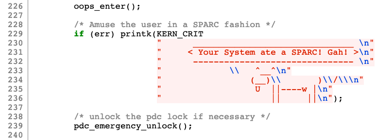

██████╗ ██████╗ ██╗ ██╗ █████╗ ╚════██╗██╔═══██╗██║ ██║██╔══██╗ █████╔╝██║ ██║███████║███████║ ╚═══██╗██║ ██║██╔══██║██╔══██║ ██████╔╝╚██████╔╝██║ ██║██║ ██║ ╚═════╝ ╚═════╝ ╚═╝ ╚═╝╚═╝ ╚═╝
Welcome to 3OHA, a place for random notes, thoughts, and factoids that I
want to share or remember.
27 January 2021
cowsay is a classic Unix command line program that generates
ASCII pictures of a cow with a user-provided message. It was written by
Tony Monroe in Perl and the original page is still accessible here.
The program has been rewritten multiple times and evolved to support
creatures other than cows. You can play with a few of them in the
textart.io site.
Cows have been part of the computer culture for a long time, so it doesn't
come as a surprise to find one buried in the Linux kernel. In the 5.11-rc6
kernel version, it is located in the
line
230 of the /arch/parisc/kernel/traps.c file:

The message is related to the Linux support for the PA-RISC architecture. I found some references to it online, ranging from startup crashes in the Android Linux kernel to a 2002 message in the Linux PA-RISK mailing list.
Everything posted here is by default published under a
CC BY-NC-SA 4.0 Creative Commons license. You may redistribute it with
attribution but not modify it. I may subsequently assign the residual
copyright to an academic publisher.